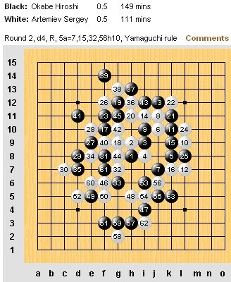

原文由 掌棋如烟 发表于 2011-8-5 9:40:44 :
消灭零回复,但是没有花给楼主了,最近情况你知道的,我穷了....借钱押注,拿10块走人
［ 微微一笑 于 2011-8-5 9:44:34 时花20金币送鲜花一朵］
［ 蓝天蓝 于 2011-8-5 10:03:55 时花20金币送鲜花一朵］
没钱送我花，我送你，压赢了加倍送花

作者：通讯员
原文网址链接：http://www.rifchina.com/Article/ShowArticle.asp?ArticleID=6458
第十二届五子棋世界锦标赛A组第二轮，中国选手曹冬与强劲对手爱沙尼亚特・泰姆拉 (Tunnet Taimla)大战243分钟，取得两连胜。中国选手黄金贤仅用时26分钟取胜日本选手大角友希(Osumi Yuki )也获得两连胜。而中国选手戴晓涵却苦战200分钟负于中华台北第一高手林皇羽 (Lin Huang-Yu)。卫冕冠军俄罗斯的弗・苏切科夫 (Vladimir Sushkov)用时28分钟战胜中华台北侯宜呈(Hou I-Cheng )，送侯两连败。爱沙尼亚冠军爱・欧艾沃 (Aivo Oll)简单败于瑞典托・安德森(Tord Andersson )。日本青年先锋冈部宽 (Okabe Hiroshi)与俄罗斯谢・阿特米耶夫(Sergey Artemiev )苦战260分钟成和。
第三轮比赛将于8月5日北京时间下午3点开始。

［ 微微一笑 于 2011-8-5 9:44:39 时花20金币送鲜花一朵］
［ 微微一笑 于 2011-8-5 9:44:34 时花20金币送鲜花一朵］
［ 蓝天蓝 于 2011-8-5 10:03:55 时花20金币送鲜花一朵］
时间真长 一天两盘 要坐死人了
引用：
原文由 忧郁的双眼 发表于 2011-8-5 9:48:47 :
前线辛苦了，通讯员也受累了。我是来刷金币的其实！！！！
其实我也是引用：
原文由 掌棋如烟 发表于 2011-8-5 9:40:44 :
消灭零回复,但是没有花给楼主了,最近情况你知道的,我穷了....借钱押注,拿10块走人［ 微微一笑 于 2011-8-5 9:44:34 时花20金币送鲜花一朵］
［ 蓝天蓝 于 2011-8-5 10:03:55 时花20金币送鲜花一朵］
没钱送我花，我送你，压赢了加倍送花
跟上大家步伐。。。拿10块走人。。。。顺便祝福三位棋手比赛加油加油~~引用：这话说的还是蛮中肯的！
原文由 小红眼镜 发表于 2011-8-5 10:09:52 :
引用：
原文由 小红眼镜 发表于 2011-8-5 10:09:52 :
中国选手曹冬与强劲对手爱沙尼亚特・泰姆拉 (Tunnet Taimla)大战243分钟
曹冬有木有坐的PP痛
引用：
原文由 炫飞冰弦 发表于 2011-8-5 10:17:05 :中国选手曹冬与强劲对手爱沙尼亚特・泰姆拉 (Tunnet Taimla)大战243分钟
曹冬有木有坐的PP痛
都说坐的住的人都胖(比如说我和99),可是曹冬小天混混这3个貌似都很瘦竹竿
引用：
原文由 掌棋如烟 发表于 2011-8-5 10:24:18 :引用：
原文由 炫飞冰弦 发表于 2011-8-5 10:17:05 :中国选手曹冬与强劲对手爱沙尼亚特・泰姆拉 (Tunnet Taimla)大战243分钟
曹冬有木有坐的PP痛
都说坐的住的人都胖(比如说我和99),可是曹冬小天混混这3个貌似都很瘦竹竿
咆哮后， 你这就不懂了吧！！ 你和99那境界才是圣，曹冬、混混、小天这仨人都返璞归真啦！
最能坐的是谁?必须是和尚呀，那和尚最后求道哪个不是瘦兮兮的，这叫锻炼体魄！！！
另外报小道消息：小眼睛存款加第一轮押注赢了已经达到了8W金币。。。 为啥我知道？因为那都是我。。。 你懂的！！！！
引用：
原文由 掌棋如烟 发表于 2011-8-5 10:24:18 :引用：
原文由 炫飞冰弦 发表于 2011-8-5 10:17:05 :中国选手曹冬与强劲对手爱沙尼亚特・泰姆拉 (Tunnet Taimla)大战243分钟
曹冬有木有坐的PP痛
都说坐的住的人都胖(比如说我和99),可是曹冬小天混混这3个貌似都很瘦竹竿
他们仨还真不算坐得住的……冬瓜没事就起来抽根烟。